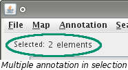

Almost everything that you see in the VCMap window is able to be selected. Selections will indicated graphically in different ways depending on what has been selected. There is also a selection bar at the top of the screen that describes what the current selection is.
To select an entire map, click on the map's label located directly above the map.
To select a segment, click on the segment. The segment's border will thicken to indicate that it has been selected. By default connecting lines will appear indicating where the features of the selected segment lie on the adjacent maps. The preferences menu contains options to show connections between non-adjacent maps also or to turn off the connecting lines completely. These lines will be gray in color.
Note: Number of features counts only those features on the segment that are currently loaded.
Selecting annotation is done by clicking on the name of the annotation. If an annotation is part of a feature grouping, it can be selected by first clicking the group name and then selecting the specific annotation. When annotation is selected the label will turn blue, a corresponding area on the chromosome will be shaded green, and connecting lines will be drawn at both the start and stop positions if the annotation also is on an adjacent map. Connecting lines can be altered with the same preferences as for segments.


Annotation can also be selected by clicking and dragging to highlight all the annotation of interest.
When only one annotation is selected the selection bar updates like it would for a segment or a map.
When multiple annotation has been selected, the selection bar indicates how many pieces have been selected. If a single annotation lies on multiple visible maps and is selected, it will be selected on all maps. (e.g. Annotation X is located on maps Y and Z and is selected from map Y. X will also be selected from map Z for a total of 2 selected elements.) To view the annotation information of the selection, click on the label pictured below. 
To view details about a selected annotation visit the View Details page.
To select an interval, use your mouse to click and drag an area on a segment. The selected interval will become shaded green in color. The corresponding area on other loaded maps will also become selected. In the picture shown below, the interval was dragged on the left map. The corresponding interval on the right map also becomes selected.